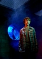

Country:United States, 92 minutes
Spoken languages:English
Genres:Animation, Adventure, Comedy, Drama, Family, Fantasy, History, Sci-Fi
Director(s):Rob Minkoff
Writer(s):Jay Ward, Craig Wright, Robert Ben Garant, Thomas Lennon, Ted Key
Video Codec:Unknown
Number: 2159


Certification:PG
Storyline:
The time-travelling adventures of an advanced canine and his adopted son, as they endeavor to fix a time rift they created.
Cast: 

Medium: Original DVD,
Loaned: No
Aspect ratio: Unknown